Why Rockfish?
From Product-focused to Brand-focused
락피쉬 웨더웨어는 감각적인 브랜드 아이덴티티를 가지고 있지만, 기존 웹사이트에서는 브랜드 헤리티지와 무드가 충분히 전달되지 않고 있었습니다.
브랜드 고유의 감성을 더욱 효과적으로 경험할 수 있도록 브랜드 중심의 UX로 재설계하였습니다.
브랜드 무드를 사용자 경험으로 재해석하다
웹페이지 리뉴얼 개인 프로젝트

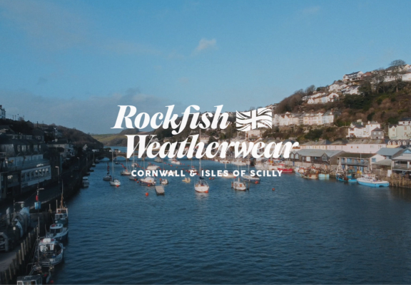
Why Rockfish?
락피쉬 웨더웨어는 감각적인 브랜드 아이덴티티를 가지고 있지만, 기존 웹사이트에서는 브랜드 헤리티지와 무드가 충분히 전달되지 않고 있었습니다.
브랜드 고유의 감성을 더욱 효과적으로 경험할 수 있도록 브랜드 중심의 UX로 재설계하였습니다.
Overview
락피쉬 웨더웨어는 영국 콘월의 자연과 라이프스타일에서 영감을 받아 탄생한 브랜드입니다.
기능적인 웨더웨어를 기반으로 감각적인 디자인과 브랜드 헤리티지를 함께 담아내고 있습니다. 클래식한 스타일과 현대적인 감각을 결합해 패션을 넘어 하나의 라이프스타일을 보여주는 브랜드입니다.
Tools
Persona
락피쉬 웨더웨어는 감각적인 스타일과 트렌디한 제품으로 주목받는 브랜드입니다. 하지만 브랜드 고유의 British Weatherwear 정체성과 헤리티지는 충분히 전달되지 않고 있었습니다.
이에 브랜드의 오리지널리티와 감성을 강화하고, 브랜드 무드 기반의 콘텐츠와 스타일 추천 영역을 추가하여 사용자가 브랜드 철학과 분위기를 자연스럽게 경험할 수 있도록 브랜드 중심 구조로 재설계하였습니다.
예쁜 브랜드인 건 알겠는데 락피쉬만의 분위기는 잘 모르겠어요.
브랜드는 감각적인데 조금 더 프리미엄한 느낌이 있었으면 좋겠어요.
제품만 보는 느낌보다 락피쉬 스타일로 코디된 무드도 같이 보고 싶었어요.
옷이나 슈즈를 살 때 브랜드가 제안하는 분위기도 중요하게 보는 편이에요.
User Experience Flow
쇼핑몰 사이트로서의 경험은 이루어졌지만 브랜드의 무드는 보여지지 않았습니다.
사용자가 락피쉬를 인식하고 탐색하는 과정에서 브랜드 무드가 어디서 약해지는지 정리했습니다.
영국 해안 감성과 브랜드 배경이 충분히 전달되지 않아, 사용자가 브랜드를 단순히 트렌디한 패션 브랜드로 인식할 가능성이 있었습니다.
Solution
브랜드 무드와 감성을 강화하고, 콘텐츠 흐름과 시각적 경험을 개선하여 사용자가 브랜드를 더욱 직관적으로 인식할 수 있도록 구성하였습니다.
브랜드 무드를 직관적으로 전달하는 메인 비주얼로 개선하였습니다.
브랜드 첫 인상 강화
브랜드 몰입감 향상
브랜드 철학과 헤리티지를 자연스럽게 경험할 수 있도록 구성하였습니다.
브랜드 정체성 전달 강화
감성적 브랜드 경험 형성
브랜드 경험이 자연스럽게 이어지도록 콘텐츠 흐름을 재구성하였습니다.
사용자 브랜드 이해도 향상
브랜드 기억 지속성 강화
패션 브랜드 무드에 맞는 에디토리얼 스타일 레이아웃을 적용하였습니다.
프리미엄 브랜드 이미지 강화
브랜드 완성도 향상
단순 쇼핑몰이 아닌 브랜드를 경험하는 웹사이트로 개선을 목표로 하였습니다.
락피쉬 웨더웨어의 British Weatherwear 감성과 브랜드 헤리티지를 중심으로 UX를 재구성하여, 브랜드의 분위기와 철학이 자연스럽게 전달될 수 있도록 개선하는 것을 목표로 하였습니다.
Color System
Rockfish Weatherwear의 컬러 시스템은
비 오는 날의 차분한 분위기와 영국 웨더웨어 특유의 헤리티지 감성을 중심으로 구성하였습니다.
메인 컬러인 딥 네이비는 영국 웨더웨어 특유의 클래식하고 신뢰감 있는 이미지를 표현하며, 브랜드의 기능성과 정체성을 강조합니다.
서브 컬러는 비 오는 날의 차분한 분위기를 담은 블루 그레이 톤으로 적용하여 안정적이고 미니멀한 무드를 형성하였으며,
포인트 컬러로는 20-30대 타깃층을 고려한 베이비 핑크 컬러를 활용해 부드럽고 트렌디한 감성을 더하여 사용자 시선을 자연스럽게 유도할 수 있도록 설계하였습니다.
Typo System
브랜드의 헤리티지와 클래식한 감성을 표현하기 위해 사용하였습니다.
브랜드의 프리미엄 무드와 시각적 임팩트를 강조하기 위해 사용하였습니다.
명확한 정보 전달과 높은 가독성을 위해 사용하였습니다.
Grid system
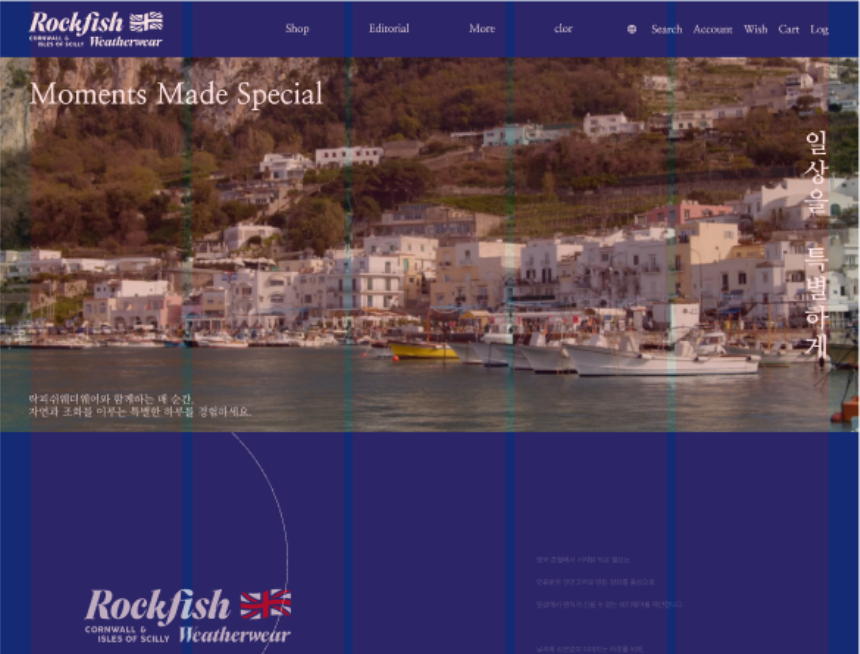
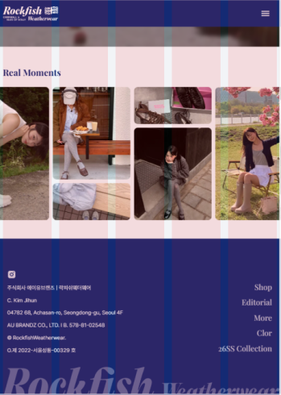
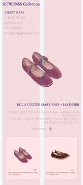

Black Rain Day
Black Friday에서 착안한 ‘Black Rain Day’ 컨셉의 프로모션 포스터를 제작하였으며,
비 오는 날의 무드와 브랜드 감성을 결합해 감각적인 비주얼로 재해석하였습니다.
또한 Up to -60% 할인 메시지를 강한 타이포와 컬러 대비를 통해 직관적으로 강조하여 사용자의 시선을 유도하고 프로모션 전달력을 높이고자 하였습니다.
다양한 디바이스에서도 브랜드 무드가 자연스럽게 유지될 수 있도록 반응형 구조로 리디자인하였습니다.
PC, Tablet, Mobile 환경에 최적화된 레이아웃을 적용하고, 모바일 사용 환경을 고려해 메뉴 구조와 사용자 동선을 직관적으로 개선하였습니다.
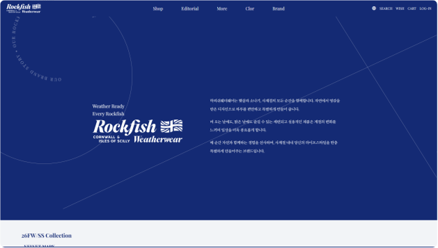
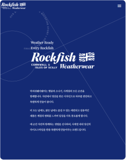
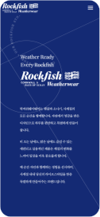
브랜드의 첫인상을 효과적으로 전달할 수 있도록 메인 비주얼 영역을 리디자인하였습니다.
영상 기반의 히어로 섹션과 브랜드 감성을 반영한 타이포 및 비주얼 요소를 활용해 몰입감을 강화하고 브랜드 무드를 직관적으로 전달하고자 하였습니다.
사용자가 브랜드의 다양한 제품을 보다 쉽게 탐색할 수 있도록 제품 추천 섹션과 코디 섹션을 추가 구성하였습니다.
직관적인 레이아웃과 카테고리 구성을 통해 사용자 탐색 흐름을 개선하고 제품 접근성을 높이고자 하였습니다.
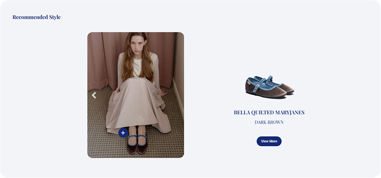
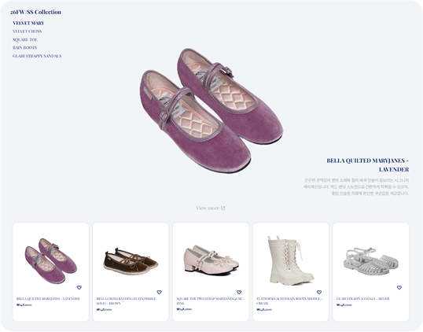
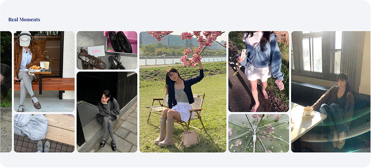
제품 중심의 단순한 정보 전달 방식에서 벗어나 브랜드 아이덴티티와 헤리티지를 중심으로 레이아웃을 재구성하였습니다.
브랜드 스토리와 감성적인 비주얼 요소를 함께 활용하여 브랜드 경험 중심의 구조로 개선하였습니다.
As is
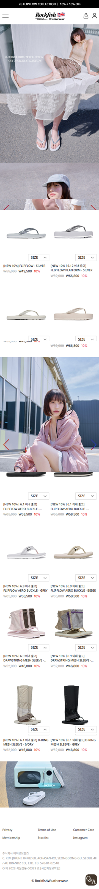
To be
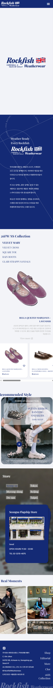
브랜드 중심의 화면 구조가 다양한 디바이스에서도 안정적으로 유지될 수 있도록 HTML, CSS, JavaScript 기반으로 직접 퍼블리싱을 진행하였습니다.
Mobile First 방식을 적용하여 모바일부터 PC까지 일관된 레이아웃 경험을 구현하였습니다.
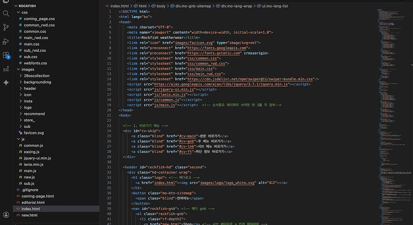
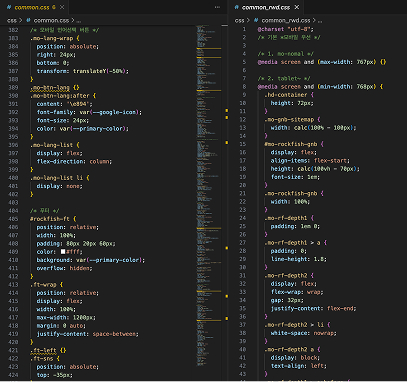
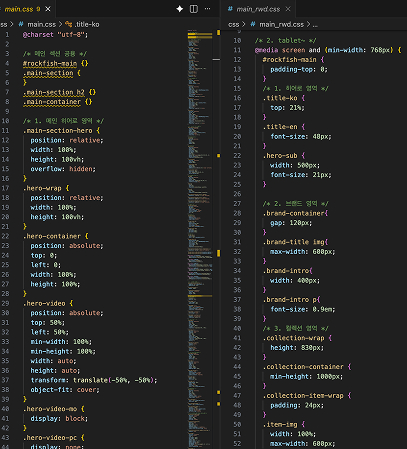
사용자가 브랜드 콘텐츠를 자연스럽게 탐색할 수 있도록 스크롤 모션과 슬라이드 인터랙션을 적용하였습니다.
CSS Animation, JavaScript, Lenis, Swiper를 활용해 브랜드 무드에 맞는 부드러운 사용자 경험을 구현하였습니다.
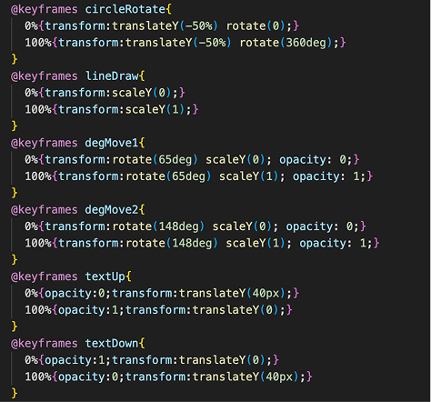
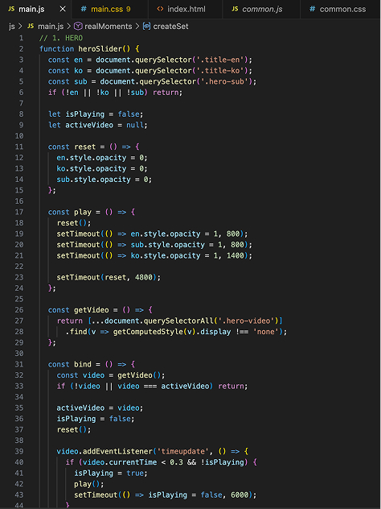
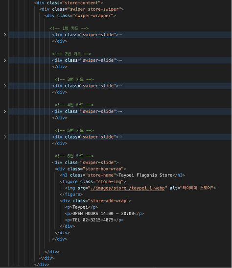
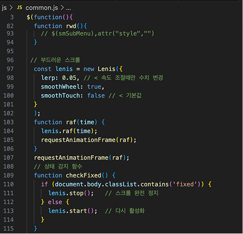
프로젝트의 버전 관리와 배포 과정을 직접 수행하며 실제 서비스 환경을 고려한 제작 경험을 쌓았습니다.
GitHub를 활용해 작업 내역을 관리하고, Netlify를 통해 웹사이트를 배포하여 다양한 환경에서 정상적으로 동작할 수 있도록 구현하였습니다.
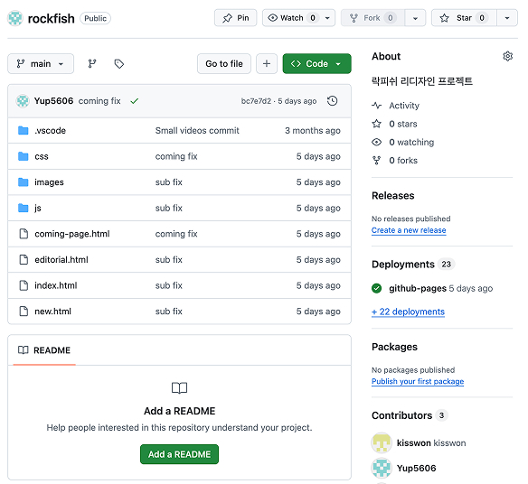
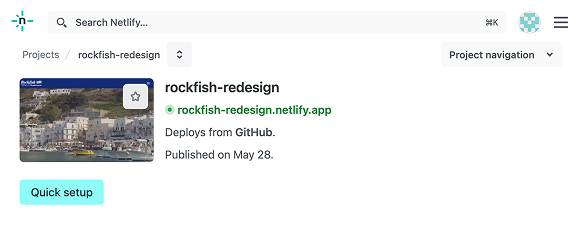
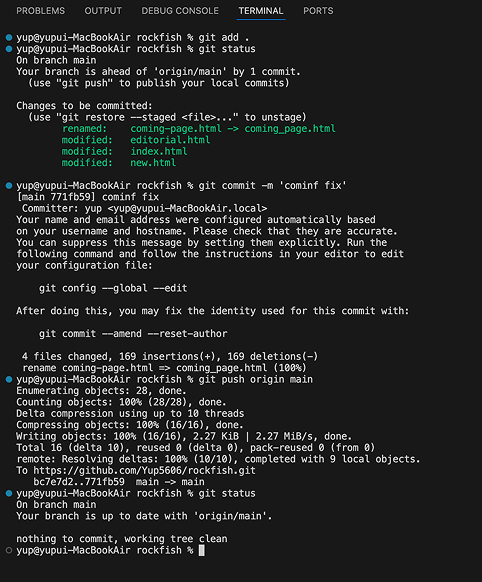
단순한 쇼핑 중심 구조에서 벗어나
브랜드 감성을 강조한 웹사이트로 개선하였습니다.
British Weatherwear 감성을 기반으로 브랜드 헤리티지를 시각적으로 강화하고,
사용자 중심의 UX 구조를 재설계하여 브랜드 무드를
자연스럽게 경험할 수 있도록 구성하였습니다.
이 프로젝트는 처음 진행한 웹사이트 리뉴얼 작업입니다.
해당 작업을 통해 브랜드 경험은 단순한 비주얼만으로 완성되지 않는다는 점을 배울 수 있었습니다.
브랜드의 철학과 분위기를 사용자 흐름 안에 자연스럽게 녹여내는 과정의 중요성을 이해하였으며,
콘텐츠 구성과 UX 설계를 통해 브랜드 몰입도를 높이는 방법을 경험할 수 있었습니다.
또한 감성적인 비주얼과 정보 전달의 균형에 대해 깊이 고민하며 프로젝트를 진행하였습니다.
브랜드의 철학과 무드를 사용자에게 효과적으로 전달하는 방법을 배울 수 있었습니다.
단순히 보기 좋은 화면을 만드는 것이 아니라,
사용자의 스크롤 흐름과 콘텐츠 구조를 고려하여 브랜드 경험 중심의 UI를 설계하는 과정을 경험하였습니다.
또한 레이아웃 구성과 콘텐츠 우선순위를 조정하며 실무적인 화면 설계 역량을 함께 키울 수 있었습니다.
브랜드 경험에 집중한 만큼 실제 쇼핑 UX 요소와의 균형 부분에서는 아쉬움이 남았습니다.
상품 정보 전달과 실질적인 사용자 행동 유도를 더욱 자연스럽게 연결하지 못한 부분이 있었으며,
사용자 데이터 기반의 설계 경험이 부족했던 점도 보완이 필요하다고 느꼈습니다.
앞으로는 브랜드 감성과 사용자 경험의 균형을 더욱 고려한 UI/UX 설계를 진행하고자 합니다.
감성적인 비주얼뿐 아니라 실제 사용자 행동과 데이터 흐름을 함께 분석하며,
브랜드 경험이 사용자 행동에 어떤 영향을 주는지 더욱 깊이 고민하는 디자이너로 성장하고 싶습니다.